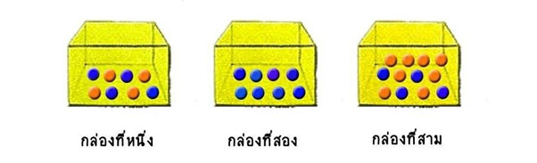

ประโยคดังกล่าวข้างต้น เป็นคำพูดที่เกี่ยวกับการคาดคะเน การทำนาย โอกาส หรือความเป็นไปได้ที่จะเกิดเหตุการณ์ที่กล่าวถึงเหล่านั้น เราไม่สามารถบอกได้แน่ชัดว่าเหตุการณ์เหล่านั้นจะเกิดขึ้นหรือไม่ จนกว่าจะถึงเวลาที่กำหนด
อย่างไรก็ตามในทางคณิตศาสตร์ อาจหาจำนวนหนึ่งที่บ่งบอกถึงโอกาสมากน้อยที่สุดจะเกิดขึ้นแต่ละเหตุการณ์เหล่านั้น และเรียกจำวนนั้นว่า ความน่าจะเป็น ของตุการณ์
การทราบความน่าจะเป็นของเหตุการณ์ใดเหตุการณ์หนึ่ง ทำให้ทราบว่าเหตุการณ์นั้นมีโอกาสเกิดขึ้นมากหรือน้อยเพียงใด ทำให้สามารถตัดสินใจดำเนินกิจกรรมที่เกี่ยวข้องกับเหตุการณ์นั้นได้อย่างมีประสิทธิภาพ
การหาความน่าจะเป็นของเหตุการณ์ เป็นเรื่องที่มีการศึกษากันอย่างจริงจังหลังจากที่ เชอวาลิเอ เดอเมเร (Chevali de Mere) นักการพนันชาวฝรั่งเศสแพ้การพนันเมื่อ ค.ศ.1654 เขาได้ท้ากับนักพนันคนอื่นๆว่า
“เมื่อทอดลูกเต๋าพร้อมกัน 24 ครั้ง จะมีอย่างน้อย 1 ครั้งที่ขึ้นแต้ม 6 ทั้งสองลูก”
ผลปรากฏว่า จำนวนครั้งที่ เดอเมเร แพ้พนันมากกว่าจำนวนครั้งที่เขาชนะพนัน
ผลจากการพนันข้างต้นทำให้เดอเมเรสงสัยว่าทำไมจึงเป็นเช่นนี้ เขาจึงนำคำถามนี้ไปถาม เบล ปาสกาล (Blaise Pascal) นักคณิตศาสตร์ผู้เป็นเพื่อนของเขา ละปาสกาลก็ได้นำคำถามนี้ไปปรึกษา ปีแยร์ เดอ แฟร์มา (Pierre de Fermat) เอนนักคณิตศาสตร์ของเขา ทั้งปาสกาลและแฟร์มาจึงได้ทำการศึกษาค้นคว้าเกี่ยวกับความน่าจะเป็นของเหตุการณ์อย่างจริงจัง จนได้คำตอบว่า ถ้าโยนลูกเต๋าที่เที่ยงตรงสองลูกพร้อมกัน 24 ครั้ง ความน่าจะเป็นของเหตุการณ์ที่ลูกเต๋าจะหงายขึ้น 6 แต้มทั้งสองลูกอย่างน้อยหนึ่งครั้งเท่ากับ 0.4914 หรือประมาณ 49เอปร์เซ็น ค่าของความน่าจะเป็นข้างต้นเป็นหลักฐานยืนยันว่า เพราะเหตุใด เดอเมเรจึงแพ้พนันมากกว่าชนะพนัน
ผลจากการศึกษาค้นคว้าเกี่ยวกับความน่าจะเป็นของเหตุการณ์ทำให้ปาสกาลและแฟร์มาได้สร้างทฤษฎีเกี่ยวกับความน่าจะเป็นที่เรียกว่า “ หลักการพื้นฐานของทฤษฎีความน่าจะเป็น ” หลักการนี้ถือได้ว่า เป็นจุดเริ่มต้นของการศึกษาความน่าจะเป็นที่อยู่ในรูปทั่วไป ต่อมาได้มีการศึกษาค้นคว้าเพิ่มเติมอย่างกว้างขวาง
พิจารณากิจกรรมต่อไปนี้
มีกล่อง 3 กล่องที่บรรจุลูกแก้วสีต่างๆดังรูป
พอลล่ากับญาญ่าเล่นเกมโดยผลัดกันหลับตาหยิบลูกแก้วจากกล่องในกล่องใดกล่องหนึ่งมา 1 ลูก เมื่อหยิบลูกแก้วดูสีแก้วแล้วคืนกล่องเดิม โดยมีเงินไขในการเล่นเกม ดังนี้
ถ้าพอลล่าหยิบได้ลูกแก้วสีส้ม ได้ 1 คะแนน หยิบได้ลูกแก้วสีน้ำเงิน ได้ 0 คะแนน
ถ้าญาญ่าหยิบได้ลูกแก้วสีน้ำเงิน ได้ 1 คะแนน หยิบได้ลูกแก้วสีส้ม ได้ 0 คะแนน
1.พอลล่าหยิบลูกแก้วจากกล่องใด จึงมีโอกาสชนะมากกว่า จงอธิบาย
2.ญาญ่าหยิบลูกแก้วจากกล่องใด จึงจะมีโอกาสชนะมากกว่า จงอธิบาย
3.พอลล่าหยิบลูกแก้วจากกล่องใด จึงจะไม่มีสิทธิ์ชนะ
4.ถ้าต้องการให้พอลล่าและญาญ่ามีโอกาสชนะเท่ากัน ควรหยิบลูกแก้วจากกล่องใด
พิจารณากิจกรรมต่อไปนี้
1.โยนเหรียญบาท 1 เหรียญ 1 ครั้ง หน้าที่หงายขึ้นอาจจะออกหัว หรือ ออกก้อย
2.หยิบลูกปิงปอง 1 ลูกจากขวดโหลดังรูป ลูกปิงปองที่หยิบได้อาจเป็นลุกปิงปองสีแดง เขียว ฟ้า หรือเหลือง
3.ทอดลูกเต๋า 1 ลูก 1 ครั้ง หน้าที่หงายอาจเป็นแต้ม 1, 2, 3, 4, 5, หรือ 6
จากกิจกรรมข้างต้นเราไม่สามารถบอกได้ว่ามีผลลัพธ์ที่เกิดขึ้นมาจากแต่ละการกระทำจะเป็นอย่างไร แต่เราสามารถบอกได้ว่ามีผลลัพธ์อะไรบ้างที่จะเกิดขึ้นได้ เรียกการกระทำเหล่านี้ว่า การทดลอง
เนื่องจากผลลัพธ์ที่เกิดจากการทดลองสุ่มแต่ละครั้ง อาจมีได้ต่างๆ กัน การแจกแจงว่าผลลัพธ์ทั้งหมดเหล่านั้นมีอะไรบ้าง อาจหาได้ด้วยการแจงนับ ดังกิจกรรมต่อไปนี้
1.โยนเหรียญบาท 1 เหรียญ 1 ครั้ง หน้าที่หงายขึ้นอาจจะออกหัว หรือ ออกก้อย
การหาผลลัพธ์ทั้งหมดที่อาจจะเกิดขึ้นจากการโยนเหรียญบาท 1 เหรียญ 2 ครั้ง อาจใช้ แผนภาพต้นไม้ ดังนี้
จะได้ผลลัพธ์ทั้งหมดที่อาจจะเกิดจากการทดลองสุ่มข้างต้นมี 4 แบบ คือ HH, HT , TH และ TT
2.สุ่มหยิบลูกปิงปอง 2 ลูกพร้อมกันจากกล่องใบหนึ่ง ที่มีลูกปิงปองสีชมพู 1 ลูก สีฟ้า 1 ลูก และสีเขียว 1 ลูก
การหาผลลัพธ์ทั้งหมดที่อาจเกิดขึ้นจากการสุ่มหยิบลูกปิงปอง 2 ลูก อาจใช้แผนภาพดังนี้
จะได้ ผลลัพธ์ทั้งหมดที่อาจเกิดจากการทดลองสุ่มข้างต้นมี 3 แบบ คือ ชมพู ฟ้า , ชมพู เขียว และ ฟ้า เขียว
3.สุ่มหยิบสลาก 2 ใบ ใบที่หนึ่งจากขวดโหลที่หนึ่ง และใบที่สองจากขวดโหลที่สอง ขวดโหลที่หนึ่งมีสลากหมายเลข 1 และ 2 ขวดโหลที่สองมีสลากหมายเลข 1 , 2 และ 3
การหาผลลัพธ์ทั้งหมดที่อาจเกิดขึ้นได้จากการสุ่มหยิบสลาก 2 ใบดังกล่าว อาจใช้แผนภาพต้นไม้ และเราสามารถใช้คู่อันดับเขียนแทนแต่ละผลลัพธ์ที่อาจจะเกิดขึ้น ดังนี้
จะได้ ผลลัพธ์ทั้งหมดที่อาจจะเกิดจากการทดลองสุ่มข้างต้นมี 6 แบบ คือ (1,1) , (1,2) , (1,3) , (2,1) , (2,2) และ (2,3)
ทำกิจกรรมต่อไปนี้
มีแป้นวงกลมอยู่แป้นที่ได้จากการแบ่งวงกลมสิบช่องเท่ากัน และมีหมายเลขกำกับเป็น 0, 1, 2, 3, 4, 5, 6, 7, 8 และ 9 ดังรูป เก่งหมุนแป้นวงกลม 1 ครั้ง เมื่อแป้นหยุดหมุนก็บันทึกตัวเลขที่อยู่ในช่องเข็มชี้ ถ้ากำหนดว่าการหมุนแต่ละครั้งมีโอกาสเท่าๆ กัน ที่แป้นจะหยุดในช่องใดช่องหนึ่ง
จากการหมุนแป้น 1 ครั้ง ให้น้องๆ ลองตอบคำถามต่อไปนี้
1. ผลลัพธ์ทั้งหมดที่อาจจะเกิดขึ้นได้ เป็นอะไรได้บ้าง
2. ผลลัพธ์ที่เข้มจะชี้ในช่องจำนวนคู่ เป็นอะไรได้บ้าง
3. ผลลัพธ์ที่เข็มจะชี้ในช่องจำนวนคี่ เป็นอะไรได้บ้าง
4. ผลลัพธ์ที่เข็มจะชี้ในช่องจำนวนที่มากกว่า 7 เป็นอะไรได้บ้าง
5. ผลลัพธ์ที่เข็มจะชี้ในช่องจำนวนเฉพาะ เป็นอะไรได้บ้าง
1.ผลลัพธ์ทั้งหมดที่อาจจะเกิดขึ้นได้ เป็นอะไรได้บ้าง
2.ผลลัพธ์ที่เข็มจะชี้ในช่องจำนวนคู่ เป็นอะไรได้บ้าง
3.ผลลัพธ์ที่เข็มจะชี้ในช่องจำนวนคี่ เป็นอะไรได้บ้าง
4.ผลลัพธ์ที่เข็มจะชี้ในช่องจำนวนที่มากกว่า 7 เป็นอะไรได้บ้าง
5. ผลลัพธ์ที่เข็มจะชี้ในช่องจำนวนเฉพาะ เป็นอะไรได้บ้าง
เราเรียกสิ่งที่เราสนใจพิจารณาจากการทดลองสุ่มในแต่ละข้อข้างต้นว่า "เหตุการณ์"
1.ความน่าจะเป็นของเหตุการณ์จากการทดลองสุ่มโดยการทดลอง
เป็นการหาความน่าจะเป็นของเหตุการณ์จากจำนวนครั้งที่เกิดขึ้นของ
เหตุการณ์ที่สนใจเทียบกับจำนวนครั้งทั้งหมดจากการทดลอง
2.ความน่าจะเป็นของเหตุการณ์ตามทฤษฎี
เป็นการหาความน่าจะเป็นของเหตุการณ์ภายใต้ “สมมติฐาน” เช่น เราอาจสมมุติว่า “เหรียญมีความเที่ยงตรง” และ “ลูกเต๋ามีความเที่ยงตรง” เป็นต้น และภายใต้สมมติฐานที่ว่า เหรียญมีความเที่ยงตรง ก็หมายถึงผลที่เกิดการโยนเหรียญ 50 ครั้ง จะเกิด H 25 ครั้ง และ T 25 ครั้ง นั่นคือ ความน่าจะเป็นที่จะได้ H ในการโยนเหรียญแต่ละครั้งเท่ากัน และความน่าจะเป็นที่ได้ T ในการโยนเหรียญแต่ละครั้งเช่นกัน
การหาความน่าจะเป็นของเหตุการณ์ตามทฤษฎี ในที่นี้จะกล่าวถึงเฉพาะความน่าจะเป็นของเหตุการณ์ที่เกิดจากการทดลองสุ่มที่ผลแต่ละตัวมีโอกาสเกิดขึ้นเท่าๆ กัน เช่น การโยนเหรียญ หรือการทอดลูกเต๋าที่มีความเที่ยงตรง การจับสลากหรือการสุ่มหยิบสิ่งของที่ไม่สามารถสังเกตสัมผัสเห็นความแตกต่างระหว่างกันได้ การหยิบไพ่จากสำหรับที่ได้มาตรฐานการหมุนวงล้อที่มีความคล่องตัวเท่ากัน ซึ่งความน่าจะเป็นของเหตุการณ์ตามทฤษฎีคำนวณได้จากอัตราส่วนของจำนวนผลที่ถ้าเป็นไปได้ของเหตุการณ์ตามทฤษฎีกับจำนวนผลทั้งหมดที่อาจจะเกิดขึ้นจากการทดลองสุ่มตามทฤษฎี ซึ่งทุกครั้งที่กล่าวถึงความน่าจะเป็นของเหตุการณ์เดียวกัน จะมีค่าความน่าจะเป็นเท่ากันเสมอ

ถ้ากำหนดให้ P(E) แทนความน่าจะเป็นของเหตุการณ์
N(E) แทนจำนวนผลที่เป็นไปได้ของเหตุการณ์
N(S) แทนจำนวนผลทั้งหมดที่อาจจะเกิดขึ้นจากการทดลองสุ่ม
จะได้ว่า P(E) = N(E)
N(S)
|
มุมความคิด ถ้าให้ P(E) คือ ความน่าจะเป็นของเหตุการณ์ที่สนใจจะได้ (1) 0 น้อยกว่าเท่ากับ P(E) น้อยกว่าเท่ากับ 1 (2) ถ้า P(E) = 0 แสดงว่าเหตุการณ์นั้นไม่มีโอกาสเกิดขึ้นเลย (3) ถ้าพระ P(E) = 1 แสดงว่าเหตุการณ์นั้นเกิดขึ้นอย่างแน่นอน |
ตัวอย่าง
ให้นักเรียนพิจารณาการหาความน่าจะเป็นของเหตุการณ์ในตัวอย่างต่อไปนี้
การโยนเหรียญที่มีความเที่ยงตรง 2 เหรียญ 1 ครั้ง ความน่าจะเป็นที่เหรียญทั้งสองออกหน้าต่างกันเป็นเท่าไร
กำหนดให้ H แทนการโยนเหรียญแล้วออกหัว
T แทนการโยนเหรียญออกก้อย
วิธีทำ ผลทั้งหมดที่อาจจะเกิดขึ้นจากการโยนเหรียญ 2 เหรียญ ที่มีความเสี่ยงตรง
หนึ่ง ครั้งคือ{H,H}, {H,T}, {T,H} และ{T,T} เหตุการณ์ที่เหรียญทั้งสองออก
หน้าต่างกันมีอยู่ 2 แบบได้แก่ {H,T} และ {T,H}
ดังนั้นความน่าจะเป็นที่เหรียญออกหน้าต่าง กัน
= จำนวนผลที่เป็นไปได้ของเหตุการณ์
จำนวนผลทั้งหมดที่อาจจะเกิดขึ้นจากการทดลองสุ่ม
แม้ว่าความน่าจะเป็น จะช่วยให้เรารู้ว่าเหตุการณ์ที่พิจารณาอยู่นั้น มีโอกาสเกิดขึ้นมากน้อยเพียงใด แต่บางเหตุการณ์ ความรู้เรื่องความน่าจะเป็นเพียงอย่างเดียวอาจไม่เพียงพอที่จะช่วยเราตัดสินใจได้ จำเป็นจะต้องหาองค์ประกอบอื่นมาช่วยในการตัดสินใจด้วย
ซึ่งองค์ประกอบหนึ่ง คือ ผลตอบแทนของการเกิดเหตุการณ์ นั้น
ในทางสถิติได้นำ ความน่าจะเป็นของเหตุการณ์และผลตอบแทนของการเกิดเหตุการณ์นั้น มาพิจารณาประกอบกันเป็น ค่าคาดหมาย ซึ่งหาได้จาก
ค่าคาดหมาย = ผลรวมของผลคูณระหว่างความน่าจะเป็นของเหตุการณ์กับผลตอบแทนของเหตุการณ์
นั่นคือ
ค่าคาดหมาย = (ความน่าจะเป็นของเหตุการณ์ที่ได้ × ผลตอบแทนที่ได้) + (ความน่าจะเป็นของเหตุการณ์ที่เสีย × ผลตอบแทนที่เสีย)
หมายเหตุ
ผลตอบแทนของเหตุการณ์ มี 2 อย่าง คือ
1) ผลตอบแทนที่ได้
2) ผลตอบแทนที่เสีย
ตัวอย่าง ในการเล่นแทงหัว, ก้อย ถ้าออกหัวอ้อจะได้เงิน 1 บาท แต่ถ้าออกก้อย อ้อจะต้องเสียเงิน 2 บาท เงิน 1 บาท ที่อ้อจะได้รับเป็นผลตอบแทน ที่ได้ ซึ่งแทนด้วย +1 และเงิน 2 บาท ที่อ้อจะต้องเสียเป็นผลตอบแทนที่เสีย ซึ่งแทนด้วย -2
ให้พิจารณาการหาค่าคาดหมายของการพนันโยนเหรียญ ต่อไปนี้
นาย ก และ นาย ข เล่นพนันโยนเหรียญกัน โดยมีกติกาว่า ให้นาย ข โยนเหรียญ 2 เหรียญ พร้อมกัน 1 ครั้ง ถ้าเหรียญที่โยนออกหัวทั้งคู่แล้ว นาย ก จะจ่ายเงินให้ นาย ข 2 บาท แต่ถ้าเหรียญออกเป็นอย่างอื่น นาย ข ต้องจ่ายเงินให้ นาย ก 1 บาท ถ้ามีการพนันโยนเหรียญกันแบบนี้ไปเรื่อย ๆ หลาย ๆ ครั้ง ให้คิดว่า นาย ก หรือ นาย ข จะได้เงินมากกว่ากัน จงอธิบาย
ในการตอบคำถามข้างต้น เราอาจใช้ค่าคาดหมายมาช่วยในการพิจารณา ดังนี้
ในการโยนเหรียญบาทที่เที่ยงตรง 2 เหรียญ พร้อมกัน 1 ครั้ง ผลลัพธ์ทั้งหมดที่อาจจะเกิดขึ้น มี 4 แบบ คือ HH, TT, HT และ TH
ความน่าจะเป็นของเหตุการณ์ที่เหรียญออกหัวทั้งคู่ = ¼
ความน่าจะเป็นของเหตุการณ์ที่เหรียญไม่ออกหัวทั้งคู่ = ¾
เนื่องจาก ถ้าเหรียญออก HH (ออกหัวทั้งคู่) นาย ก จะต้องจ่ายเงินให้นาย ข 2 บาท ดังนั้น ผลตอบแทนของเหตุการณ์ที่ได้ คือ นาย ข ได้เงิน 2 บาท จึงแทนด้วย +2 และในการโยนแต่ละครั้งถ้าเหรียญไม่ออก HH นาย ข จะต้องจ่ายเงินให้ นาย ก 1 บาท ดังนั้น ผลตอบแทนของเหตุการณ์ที่เสีย คือ นาย ข เสียเงิน 1 บาท จึงแทนด้วย -1
ค่าคาดหมาย = (ความน่าจะเป็นของเหตุการณ์ที่ได้ × ผลตอบแทนที่ได้) + (ความน่าจะเป็นของเหตุการณ์ที่เสีย × ผลตอบแทนที่เสีย)
= (+2 x ¼) + (-1 x ¾)
= ( ½) + (- ¾)
= - ¼
= - 0.25
นั่นคือ ค่าคาดหมาย ที่นาย ข จะได้เงิน เท่ากับ -0.25 บาท
แสดงว่า ถ้ามีการพนันโยนเหรียญกันแบบนี้ไปเรื่อย ๆ หลาย ๆ ครั้ง โดยเฉลี่ย นาย ข จะเสียเงินครั้งละ 0.25 บาท กล่าวได้ว่า นาย ก จะได้เงินมากกว่า นาย ข